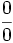
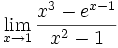
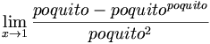

Examen
 De: La Frikipedia, la enciclopedia extremadamente seria.
De: La Frikipedia, la enciclopedia extremadamente seria.
Método de evaluación mental del nivel de control que tienen sobre tus escasas neuronas los del Gobierno, extraterrestres de Roswell, los que viven en el fondo del océano Atlántico, los que se disfrazan y están entre nosotros, Iker Jiménez y Spok. También reciben el mismo nombre, ciertos controles anales que aunque algunos digan que son dolorosos yo sé que a la mayoría les gusta.
Hoja de papel fabricada con la finalidad de joder al receptor de ésta. Suele estar rellena de galimatías. Aunque es evidente la obligación de escribir el nombre, el 100% de la población mundial se ha olvidado mas de una vez ponerlo.
Los administradores de la Frikipedia tienen que resolver este examen.
JPG
Historia del examen
El examen se remonta a la época de Aristóteles cuando éste le daba collejas a Alejandro Mango (es que era muy faishon) porque jugaba con los cereales del desayuno. Sucedió un buen día en el que unos seres de luz -más concretamente producidos por unas setas extrañas que el viejales había ingerido- llegaron a la Tierra y dijeron "Jau terrícola, venimos a vender Pepsicola. No sabrás si los de Cocacola ya han estado por aquí, ¿verdad?"
Al ver que los de aquí eran coles de bruselas con patas y napias descomunales, decidieron implantar a todo ser humano un chip en la piña para que prefirieran la Pepsicola a la Cocacola. Sucedió un buen día que los marcianos, que eran de la compañía Coca-cola, también aterrizaron delante de la casa de Aristotelillo. El hombre ya empezaba a confundir su casa con el aeropuerto de Manises, así que se fugó con la nave dejando a los marcianos aquí. Desde entonces no se supo más de él. Los de cocacola, sin embargo, viendo la estrategia que llevaban los de Pepsicola, decidieron boicotearles y hacer otro tanto. Es por eso que unos prefieren Cocacola y otros son idiotas y prefieren una pobre imitación. Con el tiempo la práctica fue extendiéndose a otras marcas. La palma se la llevó Güindous que llegó a implantar nanochips heredables genéticamente.
El problema comenzó cuando observaron que un número superior a 3000 de microchips sobrecalentaba el sistema. Al no poder instalar un motor con un ventilador en el coco decidieron camuflarlos en forma de cabellos en la superfície cutánea de la cabeza. Actualmente han surgido métodos de terrorismo encubierto antichips bajo el nombre de otras marcas llamadas Pantene y Herbal Essences, cuya misión inició un elegido llamado Antena.Neoxa fin de acabar con la sobreexplotación mental de la humanidad. Las marcas crearon los exámentes como recurso de control ante estos ataques. En los exámenes de historia se evalúa tu tendencia política y las marcas de ropa que usas, en los de mates se observa si te has percatado de que llevas una peluca de silicio en lugar de proteínas, y en biología si sabes algo sobre células.
Tipos de examen
Los exámenes se dividen en dos tipos principales: orales y escritos.
Exámenes escritos
Son los más comunes, es cuando un profesor entra al curso y dice "Saquen una hoja" (u otra similar) a lo que el 99% de los alumnos del curso responde con un "¿queeeeeeé?" mientras en su interior piensan "que cagada, no estudié" mientras que el otro 1% sabía que había un examen ese día pero en su interior también piensan "que cagada, no estudié".
Exámenes orales
Son los más terribles, pues no solo te va para el culo en ellos sino que toda la clase (incluída la chica que te gusta) se dá cuenta de ello. Un examen oral es cuando un profesor entra al curos y dice "Fulano...(imagina tu apellido allí)... pase al frente". a lo que piensas: "¡puta casualidad! de 50 personas que hay en el curso el viejo/a justo me viene a llamar a mí", mientras pasas con la cabeza baja a recibir tu martirio.
Tanto exámenes orales, como escritos se pueden a su vez clasificar de la siguiente manera:
- Exámenes ponedores: Es el exámen más dificil de aprobar. En el caso de materias teóricas está formado por preguntas concisas qué sólo pueden tener una sola respuesta (la correcta obviamente) por lo cual no pueden ser contestadas por la imaginación del alumno sino por datos presisos y/o concretos extraídos del estudio (léase carpeta, cuaderno, libro o machete). Otro tipo de estos examenes son prácticos: claro ejemplo de estos: matemáticas, que "se supone" hay que resolver los ejercios resolviendolos... en el caso que repruebes
suicidate
- Exámenes multiplechois: Son exámenes que presentan una pregunta y dan varias opciones cómo respuestas, dejando que la
victima estudiante seleccione la que le parece correcta. En general son mucho más fáciles de resolver que los demás tipos de exámenes aunque en muchas ocasiones, éstos examenes conocidos en español como de "selección múltiple" -a saber por qué coño se llaman así ya que solo debes elegir UNA opción no varias-, se les denominan tambien examenes de "confusión múltiple" ya que todas las opciones son jodidamente increiblemente parecidas por lo que el estudiante no tiene ni idea de cuál elegir. La técnica más usada para resolver éste examen en particular es el Ave María Dame Punteria. Ten mucho cuidado, porque normalmente una respuesta errónea resta entre 0,25 y 1 punto del total del examen, así que si el balance entre correctas e incorrectas vira a favor de las incorrectas, acabarás viendo un cartel que ponga "R.I.P: "Tu nombre".
- Exámenes VyF: Son un tipo de examen que presenta una afirmación que puede ser correcta o no dejandolo al criterio (y/o imaginación) del estudiante. El receptor de este tipo de examen deberá indicar que es verdadero utilizando la letra V y que es falso con una letra F. En el caso de tratarse de un examen de inglés se simplifica bastante, en verdadero usa una T (true) y en falso una F (false), de forma que basta con utilidzar un signo como チ para responder y luego argumentar que es una u otra letra. En un principio estos examenes sólo consistían en esto hasta que a alguien se le ocurrió la idea de justificar el porque dices que es falso lo que marcaste como falso y más recientemente también justificar porque dices que es verdadero lo que marcaste como verdadero hecho que crea lapsus (lagunas) mentales en las cabezitas de los que rinden y/o ataques combulsivos a largo plazo. Aunque al pricipio eran una ramificación de los multiplechois algunos profesores han logrado convertirlos en exámenes ponedores. Estos son los más peligrosos de todos, pues si el balance entre incorrecciones (poner V donde era F o poner F donde era V) vira en favor de las respuestas correctas, implicará tu muerte en el acto.
- Exámenes aptos para el chamuyo: Son también exámenes teóricos pero en los que las respuéstas pueden ser creadas por la imaginación y/o subconciente del triste ser que está tratando de aprobarlo. Las preguntas son generalmente de índole personal, especialmente en materias como Ética, "¿Cómo hubieras reaccionado tú ante esta situación?". Aunque no presenten preguntas del estilo personal también son "chamuyables" materias como Lengua, Religión, Historia y otras en las que con sólo tener una idea general (por ejemplo: quien es Jesús) es fácil aprobarlas. Lamanetablemente este tipo de exámenes parecen estar en peligro de extinción. Se creen se pueden ramificar en el siguiente tipo:
- Exámenes de rollo: Es cuando te dicen que escriba, (o diga en el caso de tratarse de un examen oral) todo lo que sepa de la materia. Dependiendo del profesor que se tenga enfrente este tipo de exámen se podrá convertir en uno ponedor o uno apto para el chamuyo
- Mario Olano. Es el único examen que ha reprobado el 99.99999999% del 100%(0.11111111% de margen de error) de los alumnos que lo rinden. No existe aún un metodo para aprobarlo, y probablemente nunca exista.
- EXAMENES DE la letra chiquita: Son los examenes cuyas preguntas son extraídas de enormes libros de texto sin dibujos ó con muchos diagramas, mapas conceptuales, cuadros y toda clase de apoyo nada visual, en los que existen explicaciones "poco importantes" para el lector, habitualmente, en letras del numero o.1, cuya lectura solo es posible con el culo de una botella, y de donde surgen la totalidad de las interrogantes que se te plantean.
- La Selectividad: Se trata de la gran Prueba de Acceso a la Universidad mediante la cual la Universidad pretende averiguar cual es tu capacidad para memorizar y vomitar el contenido de las 9 asignaturas que has cursado en el 2º de Bachiller, sin importar si entiendes realmente las cosas.
Afrontar un examen
Todos odiamos los exámenes , porque, al menos en Espiña no están para evaluar conocimientos , sino para joder
tocarte la moral. Cuando llega el momento en que te dicen la fecha del puñetero examen , ya te cagas en los
ilustrados , aquellos tipos que instauraron los exámenes hace algunos siglos , y te estará jodiendo con amigos
de fiesta, en cine , en clases de fútbol o cascándote una pajuela , viniendo a recordarte que tienes ésa ardua tarea,
haciendo de tu vida un infierno ,aunque el cerebro se suele autoengañar para que no cojamos un cuchillo jamonero
y montemos un cipostio en el asilo de ancianos , por nuestro estado de inaguantable estrés muajajliajkjkas.
Aún autoengañándose tu cerebro , siempre viene el típico mascachapas recordándote si has estudiado para
el examen que queda una semana , o si hiciste la tarea/trabajo que mandaron , y tu cerebro vuelve a sentir estrés
y tú angustia , y para encima con angustia se estudia peor jostia , por ello el subconsciente da bien duro engañando
a la parte izquierda de tu cerebro(la parte que dice que dar bofetadas a un cactus es malo) ,dándose estos resultados aprox:
1. ¿Qué es esta anotación? el examen chungo del Viernes ,bueno eso es problema de yo dentro de tres días
2.(Siguiente día) Bueno me voy a poner a estudiar ...(miras el tema) ¡coño! qué es esto, ¿esto lo dimos? (miras a la izquierda)¿qué es eso que se mueve? son dos pelusas , seguro que llega antes la de la izquierda (5 PM)
3. Jajaja ha ganado la de la izquerda , bueno , pues ya está, ahora me voy al facebook( chekas el face) ¡coño! hoy es el cumple de Esteban , se me olvidó ,pues voy a su fiesta (5:10 PM)
4. Ha estado buena la fiesta , ahora voy a subir las fotos al face ...(aparece publi XXX) ¡anda! hay un nuevo video en mi página porno preferida ,lo veré un rato (9 PM)
5. 9:01PM - 11:50PM visitas a la colección completa de porno de brasileñas depiladas y colegialas traviesas
6. 11:51 PM ¡Mierda! cagon tó , ahora no me queda tiempo para estudiar , bueno pues mañana duro eeeh
7. (Día antes del examen) ,buf ,venga si apruebo voy a celebrarlo el Viernes a lo grande , verás....
¡JODER! ¿pero qué mierda es esta? , buscaré en gúgel .... ¡ajá! aquí en yahoo respuestas ,
¿qué es esto?(miras a la derecha de la página) un vídeo de un gato haciendo parkour ,bueno pues
lo miro y en nada sigo
8. 5:01PM - 1:07AM Maratón de vídeos de gatos , fantasmas y aliens
Con lo cual , lo que haces es la combo de redbull mas paja falsa, para aguantar hasta el próximo día de una pieza,
porque vas a estar dándole a ésa mierda de asignatura toda la noche que sus conocimientos ni te servirán en un futuro.
Aunque si hacéis boicot al profesor o montáis una mafia pseudopacífica quizás puedas llorarle una recuperación
habiendo mas damnificados , pero si os dan otra fecha la cagarás viendo mas vídeos de gatos,
el pozo de Mel , que George Bush es un lagarto , vídeos de fantasmas falsísimos y opinando si son FAKE o REAL ,
viendo gente caer o haciendo el gilipollas y el documental del pollo Mike en HD
También puedes hacer lo que estos japonatas Exámen niquelado : D
Métodos de resolución
"Supuestamente" un exámen debería resolverse utilizando los conocimientos que un alumno ha aprendido de las enseñanzas del profesor en el "supuesto" caso que las haya habido; o con lo estudiado de su carpeta, cuaderno, etc. Aunque estas 2 modalidades están actualmente en desuso; por lo que se desarrollaron estas nuevas modalidades:
- Método óptico / telescópico:
Para los que tengan buena vista y una posición dominante en la sala, es un método crítico. Consiste en otear el horizonte en pos de un alumno más aventajado que sepa más que nosotros, y concretamente la hoja en la que escribe. Existen dos variantes:
Si el examen es tipo test o multiplechois o de dibujo, con ver la forma que tienen las respuestas, de un corto vistazo podemos hacer medio examen.
Aplicable en exámenes de materias numnéricas cómo matemáticas: busca un recuadro con un número dentro, probablemente sea el resultado del ejercicio.
Aplicable a la resolución de límites. Muy útil para resolver indeterminaciones tipo . Tenemos por ejemplo:

Por la Teoría de los Poquitos, tenemos que:  tenemos que, como el poquito de arriba es más grande que el de abajo, y el primero es negativo, el límite vale  Plop!
Plop!
Apto sólo para los tipo test, multiplechois o los que tengamos de dos o más respuestas posibles (en casos extremos sirve para los VyF). Sencillamente dejamos a la gracia de los números aleatorios el tener bien el ejercicio. Este método tiene dos variantes:
- Tatetí: Consiste en usar los mismo versos de la tierna infancia para elejir la respuesta correcta, tales como: "Ta-te-tí figurita para mí...", "Una doli tuá de la limetá..." etc.
- Caraocrus: Con una monedita elijiendo cara o cruz.
- AveMaría Dame Puntería: es un método exclusivo para los examenes de confusión múlpible, muy usado por los
desesperados católicos en el que cierras los ojos y apuntas hacía la pregunta con el lapiz, como si un dardo se tratáse esperando que las fuerzas del espíritu santo te indiquen cual es la respuesta correcta.
- Machete o Chuleta: El más conocido de todos, supone anotar los datos o que se creen importantes (ver más abajo) o que se pueden olvidar (en casos excepcionales todos los apuntes que se debieron estudiar) en un papel de tamaño microscópico de manera que no lo vea el profesor (pero que si lo pueda leer tú)
- Cuento lo que sé / chamuyo: En los exámenes tipo rollo, sólo te estudias una parte (ver más abajo) y lo sueltas pregunten lo que pregunten, con una introducción que intenta relacionarlo y que sacará de quicio a los profesores.
Una variante del modo de resolución de estos exámenes consiste en contar algo diametralmente diferente a lo que se pregunta con la esperanza de que el profesor sea tonto del culo (suele pasar) y suene la flauta (no suele pasar).
- Método de suposición: Creado por Haruhi Suzumiya consiste en estudiar lo que crees que sea importante y lo otro
pasartelo por el culo no. Con un poco-bastante de suerte y si los planetas están alineados le pegaste y estudiaste lo más importante, te lo pregunta, y apruebas. El resto de las ocaciones lo más importante probablemente ni lo leíste y te pongan una nota poco agradable en tu libreta.
¿Que hacer cuando sabes que vas a reprobar el examen? (99% de los casos)
- Tan pronto como te sea entregado el examen, comételo.
- Cuando lleves como 15 minutos, rómpelo en pedazos y aviéntalo gritando "¡Feliz Navidad!". Luego siéntate y pide otro argumentando que perdiste el anterior.
- Haz que un amigo tuyo entre a la mitad del examen, choque las palmas contigo y se ponga a hacer el examen. Si el maestro pregunta, explíquenle calmadamente las reglas del examen en equipo.
- Inventa una historia sin sentido en todas las hojas de respuesta, asegúrate de que sea interesante para que el profesor desperdicie tiempo leyéndola a la hora de calificar.
- Respóndelo con información de otra materia completamente diferente.
- Cuando te den una copia del examen, corre gritando: "Eureka, eureka!! Tengo los documentos secretos!"
- Entrega el examen a los quince minutos y sal comentando lo fácil que estuvo.
- Intenta negarte a contestar a todas las preguntas. Escribe por qué no las contestas, por ejemplo: "Me niego a contestar esta pregunta porque está en contra de mis creencias religiosas". Sé creativo.
- Simula un ataque epiléptico.
- Si el examen es de mates/ciencias invéntate las demostraciones más largas que puedas imaginarte. Mete pi y números imaginarios en casi todas las ecuaciones. Si es un examen tipo redacción o ensayo cuéntales tu vida con todo lujo de detalles. Otra variante: si es un examen de mates/ciencia contesta escribiendo un ensayo o redacción, y si es tipo redacción o ensayo contesta con números, ecuaciones y símbolos.
- Saca tu rotulador negro más grueso. Devuelve el examen con todas las preguntas completamente tachadas
- Contéstalo en otro idioma, si no sabes otro idioma, invéntalo.
- Ponte de pie y di en voz alta: "Vamos a revisar nuestras respuestas, yo empiezo: ¡número uno es la opción A, la número dos es la C..."
- Haz que te llamen por celular, contesta como si fuera una mala noticia y sal llorando del salón.
- Vomita sobre la hoja de examen. Entrégala. Vete.
- Lleva cubiertos en vez de bolígrafo, cuando te entreguen el examen reclama que se equivocaron de orden.
- Llévate a tu mascota al examen. Trae a tu perro, gato, cocodrilo, serpiente, tarántula, oso o presidente que tengas como mascota y ponlo encima del examen, cuando pase tu profesor dile que tu mascota se sentó encima y no puedes escribir
- Pregúntale a tu profesor si te deja ir al baño, si no te deja dile que tienes diarrea y te dejará, cuando te levantes de tu pupitre llévate el examen y cuando estés en el baño tíralo por el inodoro, cuando vuelvas dile a tu profesor que no había papel y usaste lo primero que encontraste
- Ponle tu la calificación a tu examen y dile al profesor que así es mejor y se ahorra trabajo
- Empieza la pregunta con algo razonable y luego déjalo a tu imaginación...
- Escríbelo todo con letra pequeña, para que el profe se coma el tarro descifrándolo...
- Habla por los codos durante el examen. Lee las preguntas y debate las soluciones y respuestas contigo mismo en voz alta. Si alguien te pide que pares, grita: “¡¡Yo lo que creo es que tú me lees el pensamiento!!” y luego comenta lo imbécil que es.
- Llévate contigo la PSP, GameBoy o similares. Ponte a jugar con el volumen al máximo. Blasfema cuando te maten.
- Entra en la sala de examen corriendo y mirando a todos lados frenéticamente. Ve al profesor y dile “Me han encontrado. Tengo que huir del país”. Sal corriendo.
- Ve al examen llevando una bata, una toalla enrollada en la cabeza y nada más.
- Se todo lo vulgar que puedas contestando a las preguntas. Añade un insulto o blasfemia a cada frase que escribas.
- Llévate cosas que puedas tirar al profesor cuando no esté mirando. Échale la culpa al de al lado.
- Cada 5 min. levántate, recoge tus cosas, cámbiate de sitio y continúa con el examen.
- Después de 20 min. del comienzo del examen tira todos tus papeles violentamente, exclama “¡¡Que le jodan!!” y sal de manera triunfal.
- Llévate una almohada. Duermete (o fíngelo) hasta que queden 15 min. Te despiertas, dices “Debería ponerme ya!” y haces algo disparatado.
- Aparece completamente borracho. (Y completamente borracho significa que en algún momento del examen deberías lloriquear llamando a tu mami.)
- Comenta lo sexy que encuentras al profesor ese día.
- Aparece en el examen llevando una capa negra. Después de 30 min. ponte una máscara blanca y grita “Ya estoy aquí, soy el fantasma de la Ópera!” hasta que te saquen de la sala.
- Convence a gente para hacer la ola durante el examen.
- Llévate alguna figura enorme y muy fea. Ponla a tu lado. Rézale con frecuencia. Considera algún pequeño sacrificio.
- A los 5 min. de leer el examen dile al profesor: “NO entiendo NINGUNA de estas preguntas. ¡¡Me he tragado TODAS y cada una de las clases todo el cuatrimestre!! ¿¿Qué pasa aquí?? ¿¿Y quién demonios eres tú?? ¿¿Dónde está el tio de siempre??
- Llévate una caja de Chococrispis al examen. Mete un puñado en tu boca y mastica ruidosamente. Tose. Repetir si es necesario.
- Mastúrbate.
- Da dos palmas cada rato. Si el profesor te pregunta porqué hace eso dile en un tono muy humillante: “La bombilla que se enciende sobre mi cabeza cuando me viene una idea está conectada a las palmas. ¡Bobooo!”
- Lleva contigo a un amigo para que te haga un masaje durante todo el examen. Insiste en que esa persona es indispensable porque tienes muy mala circulación.
- Cuando ya tengas el examen llama a un profesor. Señálale cualquier pregunta y pregúntale la respuesta. Intenta sacarle la respuesta. Sobórnale.
- Lleva contigo chuletas o apuntes de OTRA ASIGNATURA (asegúrate de que sea muy obvio…como llevar apuntes de historia a un examen de cálculo) grapalas a la hoja del examen y añade una nota diciendo: “Por favor, utilice las hojas adjuntas de referencia como crea usted conveniente”.
- Contesta a la preguntas en tu portátil. Asegúrate de que los sonidos del teclado estén encendidos.
- Haz que alguien entre durante el examen preguntando por ti y te entregue un ramo de flores, un paquete, etc.
- Haz aviones de papel con las hojas de examen. Apunta a la fosa nasal izquierda del profesor.
- Haz el examen usando ceras, rotuladores de colorines, o subrayadores fosforitos.
- Lame tu examen todo el rato. Si te preguntan, di "Es que mi madre me dijo que si quería la bicicleta tendría que probar el examen".
Curiosidades: (todas verídicas):
- Una profesora de lengua que tuve me bajo puntaje por escribir Evaluación en la hoja sosteniendo que la forma correcta es Ebaluación.
- Un profesor de contabilidad en lugar de sumarme los puntajes me los restaba, así aunque hubiera hecho todo bien siempre me iba a poner un 1.
- Una profesora de física que tuve podía leer la mente y entoces sabía cuando nos copiábamos.
- Una profesora de contabilidad nos daba alimentos mientras rendíamos para que si nos desmayabamos o algo así no pudiésemos decir que fue su culpa.
- Un Profesor del español puso en la pregunta 12 de un examen: responder solo hasta la pregunta 10.
- Un maestro de la facultad hasta el final del examen escribio: "El que responda este examen esta reprobado"
- Una maestra de español me alego que el gerundio era "-ando y -endo" viendo que en el libro decia "-ando, -endo y -yendo"
- Una profesora de Informática preguntó: "Qué es un Archivo RAR ? " Y nos pusimos a mirar la pregunta y decía: "El que la responda es marico "
Veáse también
Autor(es):
- Krusher
- Lance Bean
- Frikiman
- Roms
- Viento
- Guilfer
- Azulejos
- ElInventor
- El charro
- Thabita
Frikipedia 2005-2016, Licencia
GFDL 1.2 - Extraído por FrikiLeaks